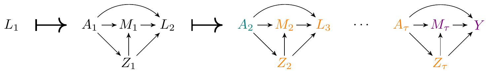

9 Time-varying treatments, mediators, and covariates
We’ll now turn to thinking about how to define and estimate effects for cases where treatment, mediators, and covariates are time-varying.
Before we delve into the specific, here are a couple of papers on this topic that are interesting/useful:
- Mediation analysis with time varying exposures and mediators by Tyler J. VanderWeele and Eric J. Tchetgen Tchetgen
- Longitudinal Mediation Analysis with Time-varying Mediators and Exposures, with Application to Survival Outcomes by Wenjing Zheng and Mark J. van der Laan
- Efficient and flexible causal mediation with time-varying mediators, treatments, and confounders by Iván Díaz, Nicholas Williams, and Kara E. Rudolph
- Identification and estimation of mediational effects of longitudinal modified treatment policies by Brian Gilbert, Katherine L. Hoffman, Nicholas Williams, Kara E. Rudolph, Edward J. Schenck, Iván Díaz.
In this chapter, we will be using the lcm R package, which supports binary time-varying treatments and categorical mediators, and the lcmmtp R package package, which supports continuous, multivariate, and binary time-varying treatments and categorical mediators.
9.1 Illustrative example
As an illustrative example, we will use a dataset from an observational study looking at the effect of invasive mechanical ventilation (IMV) on the survival of COVID-19 patients, considering acute kidney injury (AKI) as a mediating factor.
Briefly, IMV is a treatment for acute respiratory distress syndrome (ARDS). While IMV is a potentially life-saving therapy in patients with ARDS, its usage has been associated with several iatrogenic risks. Of interest to our illustrative study is acute kidney injury (AKI), a critical condition that complicates ICU stays and is associated with increased mortality. The causal model underlying this problem is as follows:
The data on a single observational unit can be represented by the vector \(O=(L_1, A_1, Z_1, M_1, L_2, \ldots, A_\tau, Z_\tau, M_\tau, Y)\), with the data pooled across all participants denoted \(O_1, \ldots, O_n\), for a of \(n\) i.i.d. observations of \(O\). The associated DAG is
Where we are using the following notation:
- \(W\): baseline variables such as comorbidities, demographics, etc.
- \(L_t\) and \(Z_t\): time-varying covariates such as lab results, vitals, treatments, etc.
- \(A_t\): type of oxygen support at time \(t\) (0: no oxygen support, 1: oxygen support excluding IMV, 2: IMV)
- \(M_t\): indicator of AKI at time \(t\)
- \(Y\): mortality at end of study
- We will use \(H_t\) as a shorthand to denote all the data measured up until right before \(A_t\) occurs
9.2 Defining causal effects in this example
How can we define (total) causal effects in this example?
- Main challenge: cannot consider static treatmemt regimes (e.g., do not intubate)
- Such regimes would not be supported in the data (doctors would always intubate a person whose blood oxygen is too low)
- We use modified treatment policies to address this
- Main idea: consider a slight modification to the treatment a patient actually received
- For example, can consider the effect of a small delay in receiving IMV
- Specifically, we will consider a delay of one day in receiving IMV
- In notation, the treatment regime would be as follows:
\[\begin{equation} d_t(a_t,h_t) = \begin{cases} 1 &\text{ if } a_t=2 \text{ and } a_s \leq 1 \text{ for all } s < t,\\ a_t & \text{ otherwise.} \end{cases} \end{equation}\] - We could then define the total effect as \(E[Y(d) - Y]\), where \(Y(d)\) is the counterfactual mortality if the above rule had been implemented every day, i.e., the intervention is \(d=(d_1,d_2,\ldots, d_\tau)\). - This is a contrast of the mortality rate under a treatment rule that would delay intubation by one day vs the mortality rate that was actually observed.
9.3 How do we define mediation causal effects with time-varying data?
The above causal effect could be decomposed into natural direct and indirect effects as follows
\[\begin{align*} E[Y(d) - Y] & = E[Y(d, M(d)) - Y(A, M)]\\ &=\underbrace{\E[Y(\color{red}{d},\color{blue}{M(d)}) - Y(\color{red}{d},\color{blue}{M})]}_{\text{natural indirect effect}} + \underbrace{\E[Y(\color{blue}{d},\color{red}{M}) - Y(\color{blue}{A},\color{red}{M})]}_{\text{natural direct effect}} \end{align*}\]
However, as before, these natural mediation effects are not identified.
The reason is that time-varying mediators exacerbate the issue of intermediate confounding. To see why, let us look at the DAG again:

Note that all the variables in orange are confounders of the mediator \(M_\tau\) and the outcome, and are also affected by treatment at time \(t=2\).
One possible solution to the above issues involves considering randomized versions of the above effects. Specifically:
- Define \(G(d)\) to be a random draw from the distribution of \(M(d)\) conditional on baseline variables \(W\).
- We can then obtain the decomposition \[ \E[Y(d, G(d)) - Y(A, G(A))]=\underbrace{\E[Y(\color{red}{d},\color{blue}{G(d)}) - Y(\color{red}{d},\color{blue}{G(A)})]}_{\text{randomized interventional indirect effect}} + \underbrace{\E[Y(\color{blue}{d},\color{red}{G(A)}) - Y(\color{blue}{A},\color{red}{G(A)})]}_{\text{randomized interventional direct effect}} \]
- As an example, consider the counterfactual \(Y(d, G(d))\).
- \(M(d)\) is the observed AKI status of patients under a delay in intubation. If \(W\) is age, and we are deciding how to intervene on a patient who is 45 years old, we take all the AKI statuses of 45 year olds and draw one of these AKI values at random. Call this random draw \(G(d)\)
- For a 45 year old patient, \(Y(d, G(d))\) is the counterfactual mortality of a patient if intubation had been delayed, and their AKI status would have been assigned to a random draw from the AKI status of 45 year patients.
9.4 Identification assumptions and formula
The above effects are identified under the following assumptions:
- All the common causes of \(A_t\) and \((Z_s, M_s, A_{s+1}, L_{s+1})\) are measured for \(s\geq t\)
- All the common causes of \(M_t\) and \((Z_{s+1}, A_{s+1}, L_{s+1})\) are measured for \(s\geq t\)
- The intervention \(d\) is supported in the data, meaning that for every patient with covariates \(h_t\) who had treatment status \(a_t\), it is possible to find a patient with covariates \(h_t\) who had treatment status \(d(a_t, h_t)\)
- In our example, this translates roughly as: for every patient with covariate history \(h_t\) who was intubated at time \(t\), it is possible to find a patient covariate history \(h_t\) who was intubated at time \(t+1\).
- There is a positive probability of the mediator \(M_t\) for all feasible covariate histories.
The identification formula is complex, but we will explain it in the case of two time points. That is, assume the data are \(O=(W, A_1, Z_1, M_1, L_1, A_2, Z_2, M_2, Y)\).
Identification can be based on the following procedure. First, for each value \(m_1\) and \(m_2\) of the mediator, compute outcome regressions as follows:
- Regress \(Y\) on \(W, A_1, Z_1, M_1, L_1, A_2, Z_2, M_2\). Use this regression to predict the outcome had the mediator been set to \(M_2=m_2\). Let \(\tilde Y_2(m_2)\) denote this prediction.
- Regress \(\tilde Y_2(m_2)\) on \(W, A_1, Z_1, M_1, L_1, A_2\). Use this regression to predict the outcome had the treatment \(A_2\) been set to \(d(A_2, H_2)\). Let \(\tilde Y_2^d(m_2)\) denote this prediction.
- Regress \(\tilde Y_2(m_2, d_2)\) on \(W, A_1, Z_1, M_1\). Use this regression to predict the outcome had the mediator been set to \(M_1=m_1\). Let \(\tilde Y_1(m_1, m_2)\) denote this prediction.
- Regress \(\tilde Y_1(m_1, m_2)\) on \(W, A_1\). Use this regression to predict the outcome had the treatment \(A_1\) been set to \(d(A_1, H_1)\). Let \(\tilde Y_1^d(m_1, m_2)\) denote this prediction.
Then, for each value \(m_1\) and \(m_2\) of the mediator, compute the mediator distribution as follows:
- Regress the binary variable \(I(M_2=m_2)\) on \(W, A_1, Z_1, M_1, L_1, A_2\). Use this model to predict the probability of \(M_2=m_2\) under an intervention that sets \(A_2\) to \(d(A_2, H_2)\). Let this predicted probability be denoted with \(P(m_2)\).
- Regress the binary variable \(I(M_1=m_1)P(m_2)\) on \(W, A_1\). Use this model to predict under an intervention that sets \(A_1\) to \(d(A_1, H_1)\). Let this prediction be denoted with \(P(m_1, m_2)\).
At the end of these two sequential regression procedures, we have values \(\tilde Y_1^d(m_1, m_2)\) and \(P(m_1, m_2)\) for each value of the mediator \((m_1, m_2)\). Then, under identification assumptions, we have:
\[ \E[Y(d, G(d)) = \sum_{m_1, m_2}\tilde Y_1^d(m_1, m_2)P(m_1, m_2) \ . \]
9.5 Estimators and R package
As before, we can develop inverse probability weighted estimators, as well as substitution estimators based on the g-computation formula and doubly robust (DR) estimators.
All of these estimators get significantly more complex. For instance, an g-computation estimator may be developed by running the regressions indicated in the above sequential regression procedures.
Fortunately, the doubly robust estimators are coded in a package that can be used off-the-shelf without having to code any complicated sequential regression strategies on your own. Let us look at an example from the lcmmtp R package. First, let’s take a look at a simulated dataset available in the package:
ID L_1 A_1 Z_1 M_1 L_2 A_2 Z_2 M_2 Y c1 c2
1 1 2 1 2 1 2 0 1 3 NA 1 0
2 2 2 1 2 2 1 0 1 3 0 1 1
3 3 1 0 2 2 3 1 2 3 0 1 1
4 4 1 0 3 2 3 1 1 2 1 1 1
5 5 1 0 1 2 2 1 1 2 1 1 1
6 6 1 0 3 2 1 1 3 2 0 1 1[1] 5000 12Now, let us perform an analysis where we assume our intent is to estimate \(\E[Y(1), G(0)]\):
Code
library(mlr3extralearners)
vars <- lcmmtp:::lcmmtp_variables$new(
L = list(c("L_1"), c("L_2")),
A = c("A_1", "A_2"),
Z = list(c("Z_1"), c("Z_2")),
M = c("M_1", "M_2"),
Y = "Y",
cens = c("c1", "c2")
)
lrnrs <- c("mean", "earth", "glm")
d_ap <- function(data, trt) rep(1, length(data[[trt]]))
d_as <- function(data, trt) rep(0, length(data[[trt]]))
EY10 <- lcmmtp(
data, vars, d_ap, d_as,
control = .lcmmtp_control(folds = 2,
learners_trt = lrnrs,
learners_mediator = lrnrs,
learners_QL = lrnrs,
learners_QZ = lrnrs,
learners_QM = lrnrs)
)Now, assume that we want to estimate the direct effect by contrasting \(\E[Y(1), G(0)] - \E[Y(0), G(0)]\):
And we can contrast the two using a convenient function from the lmtp R package:
9.6 Pros and cons of this methodology
Pros
- Allows the non-parametric definition, identification, and estimation of mediational causal effects for general longitudinal data structures
- Allows for the use of machine learning to alleviate model misspecification bias, and is equipped with formulas for the computation of correct standard errors and confidence intervals
- Easy-to-use software
Cons
- Some limitations remain: mediators \(M\) need to be discrete random variables
- As before, interventional effects do not satisfy the mediational sharp null criteria, meaning that they may be different from zero when no individual in the population experiences mediational effects
- This is probably not a big worry in practice, but it is something we are keeping in mind as we develop novel estimators